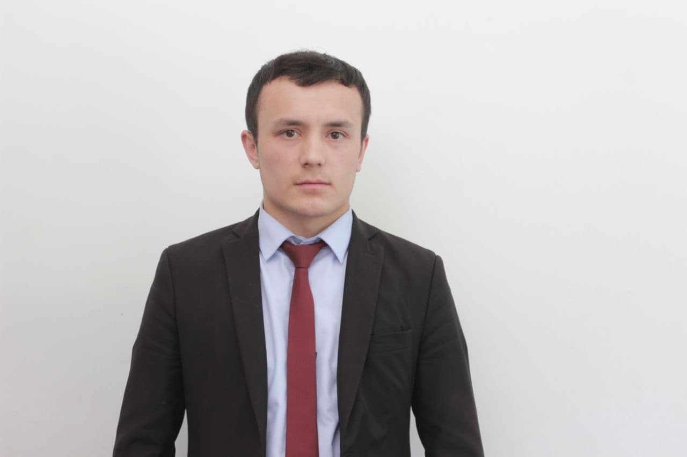

Ҷӯраев Ҳамзилло Ҳусейнович
донишҷуи кури 3-юми ДДХ
Барномасз
Cобиқаи кори:
01.10.2019 то ҳозир лаборанти лабораторияи кафедраи "Барномарезӣ" факултети Т ва ТИ-и ДДХ
Лоиҳаҳои бо мувафақиат ба анҷом расонидаи ман
1. Сохтани Астериск( косентр)
2. Санитайзер +
3. Қутии худкор барои партовтани даспушак ва маскаҳои истифодашуда
4. Гузаронидани курси омузишии "Python барои навкорон"
5. Барномаи телефонии "Чен кардани оби аз латок гузаштаистода ё дар обанбор истода" бо забони барномарезии Dart(Flutter)
Мақсад:
Омузиши забонҳои PHP, Python, Dart(Flutter) ва ...

Контакты:
Адрес: ш. Исфара, д. Ворух, кучаи.Ҷавонон 61, айни ҳол дар шаҳри Хуҷанд зиндагони мекунам
тел: 98-907-45-62
mail: hamzullodzuraev@gmail.com
Забонҳо:
Тоҷикӣ: олӣ
Русси: миёна
Англисӣ: оғоз
забонҳое барномасози
C++
Python
Dart(flutter)
MySQL